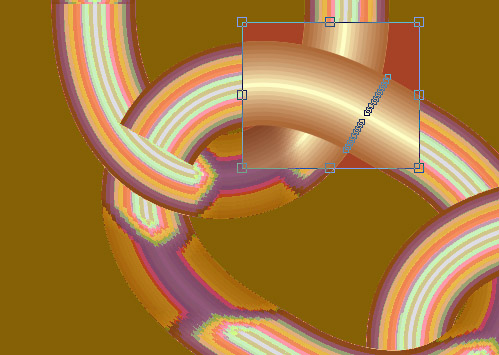

Цепи и цепочки (новая версия)
Универсальный способ создания полностью редактируемого изображения цепи явился результатом синтеза оригинальных приёмов, предложенных двумя авторами, Алексеем (ник: Solowejka) и Сергеем (ник: sergey).
Те, кто рисовал или пытался рисовать цепочки, знают, что это довольно непросто. Ведь каждое звено в месте соединения звеньев должно быть одновременно как бы в разных слоях, то есть участок одного звена «ныряющий» в другое звено, располагается над этим звеном (на уровень выше), а участок того же звена, «выныривающий» из другого, располагается под ним (теперь уже на уровень ниже ), то есть один и тот же объект должен быть одновременно и тут и там.
Люди уже давно придумали, как это преодолеть: делают так называемую заплатку, которая вырезается из участка того звена, которое фактически располагается ниже другого, и перекрывают этой заплаткой место пересечения с другим звеном, создавая иллюзию того, что в этом месте звено расположено выше другого.
В данном уроке суть способа та же, но используются некоторые рациональные приёмы работы плюс особенности программы CorelDRAW, позволяющие выполнять эту задачу настолько легко, что рисование любых цепей и цепочек – это уже не работа, а просто музыка!
Главное, будьте внимательны и выполняйте всё точно в соответствии с указаниями, изложенными в уроке.
Прежде, чем начать работу, выполните одну полезную установку, которая будет полезна всегда: установите смещение копии равным нулю.
")
Сначала создадим звено цепи. Это можно сделать разными способами, например, перетеканием от тонкого кольца к более широкому. Но опыт показал, что для того, чтобы края заплатки не были видны, лучше создать его как совокупность двух контурных групп от средней линии (овала) с шагом примерно на 1/3 меньше, чем толщина линий, например, толщина линии 0,2 мм, шаг контурной группы – 0,15 мм. Группы разъедините от исходной кривой, разгруппируйте и всё сгруппируйте вместе.
Создайте два дубля (копии) звена цепи. Одна копия нужна будет для создания заплатки. Заплатку делаем простой обрезкой.
Вторая копия нужна для создания контейнера.
Суть и смысл контейнера состоит в том, что он сам по себе не является самостоятельным объектом, а вспомогательным, его контур ограничивает видимую зону тех объектов, которые в него помещены, то есть – это как бы обрезная маска, которая не обрезает безвозвратно, а скрывает то, что оказывается за пределами контура контейнера, и всегда имеется возможность отредактировать наполнение контейнера. Это свойство позволяет с успехом использовать контейнер в тех случаях когда надо ограничить тень, падающую от других объектов, и которая должна быть видна только на поверхности одного объекта.
В нашем случае, для цепочки, звенья которой меняют положение в пространстве, описанные свойства контейнера очень кстати, поскольку надо не только тень ограничить поверхностью звена цепи, но при изменении положения звеньев, положение тени тоже будет изменяться, и удобство редактирования тени в данном случае как раз важно.
Использование контейнера для редактирования тени в сочетании со способом перекрытия заплаткой позволяет получить универсальный способ создания полностью редактируемого изображения цепи.
Итак, для создания контейнера из второй копии, разгруппируйте все линии, образующие звено, переведите из абрисов в объекты и объедините в общий контур.
")
Затем создадим тени, используя полученную нами заплатку как источник тени. Разъедините тень и объект, из которого её создавали.
Затем поместим звено в контейнер. Для этого выделите звено и выбирете Эффекты – PowerClip – Поместить в контейнер. Курсор должен принять вид жирной стрелки, щёлкните ей по силуэту контейнера.
То же самое проделайте с двумя тенями (выделяйте сразу обе). Скорее всего сразу тени не займут желаемого положения и придётся их переместить. Щёлкните по контейнннеру правой кнопкой мыши и в открывшемся меню выбирете Редактировать содержимое.
")
В открывшемся окне можете тени перемещать, трансформировать, задавать прозрачность и даже корректировать цвет с помощью Лаборатории по корректировке растровых изображений.
Затем щёлкните по одному из редактируемых объектов правой кнопкой мыши и выбирете Завершить редактирование или, если меню не открывается, выбирете Эффекты – PowerClip – Завершить редактирование.
Затем расположите заплатку над звеном точно на своём месте, используя большой масштаб увеличения.
Вот такой пакет из двух объектов: контейнера и заплатки – это и есть универсальный элемент цепи. Дублируйте его, перемещайте, набирайте цепочку. Главное – не сгруппировывайте.
Выделите оба объекта. Дублируйте (Ctrl + D). Выделение не снимайте (это важно!). Сместите полученную дублированием копию в сторону заплатки, используя клавиши со стрелками или мышью (можно с нажатой Ctrl для строгого перемещения по горизонтали или по вертикали).
")
Для удобства перемещения с помощью клавиш со стрелками настройте шаг перемещения поменьше (например, 0,01 мм), а большой шаг перемещения 10 х 0,01 мм (с нажатой Shift).
Затем опять нажмите Ctrl + D, при этом получится новая копия (дубль) с повтором последнего выполненного смещения.
Нажимая подряд Ctrl + D столько раз, сколько нужно звеньев, Вы получите прямолинейную цепочку.
Если нужно получить цепочку по кривой линии, то после очередного нажатия Ctrl + D можете добавить небольшой поворот звена, при этом для следующего дубля будет повторено смещение с поворотом, если очередной дубль занял неудачное положение, можете корректировать его, главное – не снимать выделение, и можете снова дублировать.
")
")
")
")
")
")
На рисунке ниже показано, что при повороте очередного звена на большой угол край заплатки может врезаться в звено при попытке составить звенья более плотно. Просто дополнительно подрежем заплатку
На следующем рисунке показано как при дальнейшем повороте звена ещё на 45° заплатка опять врезается в звено. Ещё подрежем заплатку. В действительности каждый раз подрезать заплатку конечно не придётся, так как такие резкие извивы цепи редки, но мы показали, что даже при этом с редактированием нет проблем. Возможно, может оказаться, что надо будет не подрезать, а наоборот нарастить заплатку, тогда можно создать новую из копии звена, обрезав как надо. Правда, на этот случай лучше иметь запасную копию звена, чтобы не пришлось извлекать из контейнера.

И в завершение, если цепь не замкнута, на крайних звеньях придётся подредактировать содержимое контейнеров – удалить лишние тени.
Редактирование теней делается так же как это уже было описано для случая при их помещении в контейнер (рис. 7).
Если необходимо создать замкнутую цепь, то для обеспечения правильного перекрытия звеньев для первого звена надо создать вторую заплатку, расположенную диаметрально-противоположно первой.
Специально для CDRPRO.ru
Копирование и публикация любым способом урока или любой части его без письменного согласия обоих авторов запрещено
хороший урок!
Чем она так полезна, да ещё и всегда?
Black, будь немного серьезней, это же элементарно и логично!
Des425, а я вполне серьёзен. Что такого полезного в этой опции именно с нулевым сдвигом? Может я чего то просто не знаю вот и хочу узнать.
Black, настройки смещения дубликата можно делать только через Options, а когда у тебя дуплекат накладывается друг на друга, то можно смещать с помощью Nudge distance, а последующие будут сдвигаться уже автоматически, даже учитывая направления!
всё равно не понимаю. если нужно просто дублировать объект на том же месте, чем "+" не устраивает, а если надо со смещением тогда зачем в уроке указан 0
Сама собой "+" удобней но речь шла о дубликате!
Des425, "+" это не дубликат? Вообще я хотел услышать именно автора материала, его пояснения.
Страницы